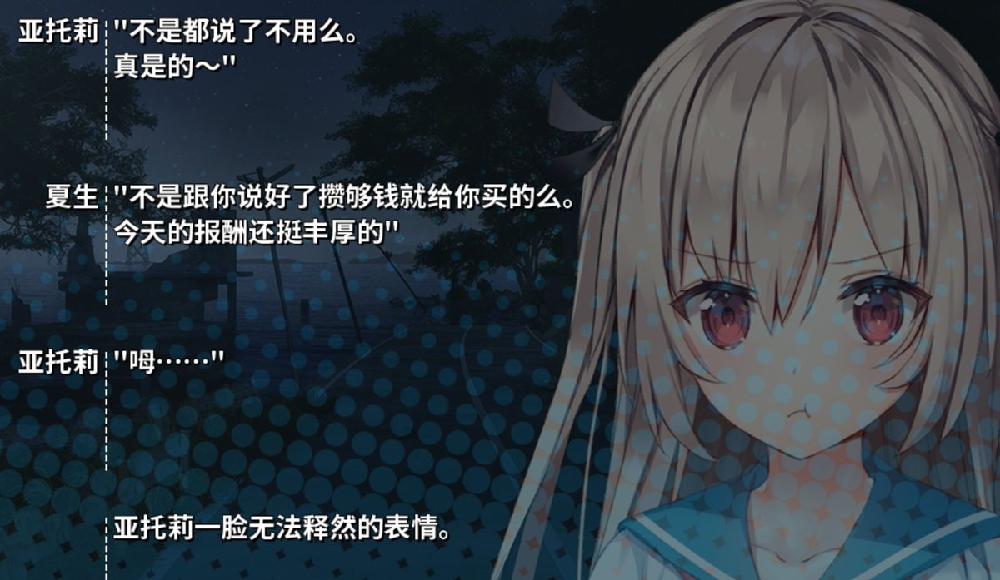
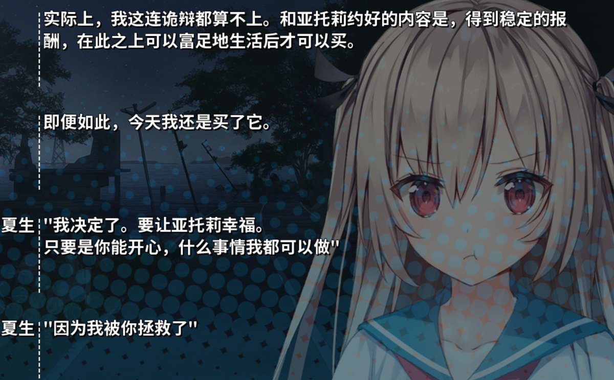

《拯救是》
“拯救”是——孤独的个体遇到另一个个体，通过纯粹的情感陪伴完成救赎，然后以“让对方幸福”作为回报。这里没有阶级、没有金钱、没有权力结构，只有两个抽象的人之间的抽象交换。
如果沉溺于此，则“拯救”完全是一个用符号劳动替代物质斗争的资产阶级情感叙事幻想。
人是自由的，人注定自由，人背负自由的重量。拯救不是来自他者，而是来自自己选择成为什么样的人。夏生被亚托莉“拯救”，实际上是他借亚托莉的镜像完成了自己的选择。如果他把幸福寄托在亚托莉的回报上，他就从自由落入了自欺——假装意义在他者手中。
亚托莉和夏生的故事感动了很多人。但那是作品，是符号秩序内允许的、无害的情感消费。在真实的、充满阶级、剥削和创伤的世界上，“拯救”往往变成债务、变成绑架、变成无法偿还的高利贷。
拯救是一个美丽而危险的词。

“拯救”是——孤独的个体遇到另一个个体，通过纯粹的情感陪伴完成救赎，然后以“让对方幸福”作为回报。这里没有阶级、没有金钱、没有权力结构，只有两个抽象的人之间的抽象交换。
如果沉溺于此，则“拯救”完全是一个用符号劳动替代物质斗争的资产阶级情感叙事幻想。
人是自由的，人注定自由，人背负自由的重量。拯救不是来自他者，而是来自自己选择成为什么样的人。夏生被亚托莉“拯救”，实际上是他借亚托莉的镜像完成了自己的选择。如果他把幸福寄托在亚托莉的回报上，他就从自由落入了自欺——假装意义在他者手中。
亚托莉和夏生的故事感动了很多人。但那是作品，是符号秩序内允许的、无害的情感消费。在真实的、充满阶级、剥削和创伤的世界上，“拯救”往往变成债务、变成绑架、变成无法偿还的高利贷。
拯救是一个美丽而危险的词。


“拯救”是一种情感上的隐喻。夏生此前可能处于迷茫、孤独或失去动力的状态，而亚托莉的出现或陪伴，让他重新找到了生活的目标、希望或快乐。正因如此，他才会下定决心“要让亚托莉幸福”，并用买礼物、努力工作等方式回报她。这种“拯救”不一定是物理上的救命之恩，更多是指精神上的救赎——亚托莉让他变成了 https://t.co/mv1ej4NShB